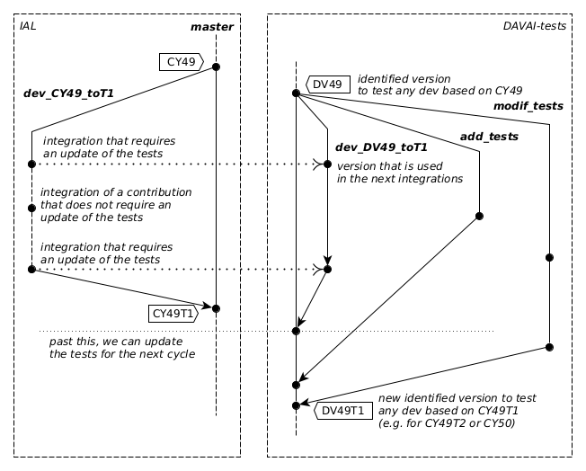

Versioning of tests
The following reasons may require to update the tests:
Update the input resources or a task template script, to change the purpose or context of a test (e.g. new observations or modified namelists, to pull the tests more closely to operational configurations, ...). This usually comes with a change in the targeted tests outputs.
Add new tests.
Update the resources to adapt to a code change (e.g. new radiative coefficients files format, or a mandatory namelist change), with or without change in the results.
Therefore it is necessary to track the evolutions of the tests properly, and version them clearly, so that it is clear what fixed or evolving version is to be used in any context. Hence the existence of the DAVAI-tests repository. The first two kinds of evolutions (a. and b.) are not necessarily linked to a contribution of code to the IAL repository, and therefore can be implemented at any moment in a dedicated branch of the tests repository (DAVAI-tests). This is described in more details in section add-modify-tests
The latter is on the other hand attached to a contribution, and will require to be given together with the contribution for an integration, and be integrated itself in an evolving tests branch dedicated to test successive steps of the IAL integration branch. This case is detailed in more details in section parallel-branches
To follow more easily what version of the tests should be used in particular for contributions to the IAL codes, it is proposed to adopt a nomenclature that maps the IAL releases and integration/merge branches, but replacing "CY" by "DV" (for DAVAÏ), as illustrated

With this principle, the version of the tests to be used by default would be, for example:
for a development based on
CY49$\rightarrow$DV49for an integration branch towards
CY49T1, nameddev_CY49_to_T1$\rightarrow$dev_DV49_to_T1
Adding or updating tests independently from the code
The tests modifications which are not intrinsically linked with a contribution (adding tests or modifying a test to modify its behaviour) can be done at any moment, in a development branch of the tests repository. However, in order not to disturb the users and integrators, they should be merged into the next official version of tests (i.e. the version used for contributions and integrations to IAL) [only between a declaration of an IAL release and a call for contribution]{.underline}.
Evolution of the tests w.r.t. Integration of an IAL release
In the context of integration of an IAL release, it is suitable that the tests change as little as possible during the successive integration of contributions. Therefore we will set a version of the tests at the beginning of integration, and only adapt it for the contributions that require an update of the tests.
Let's consider the process of integration of contribution branches on top of CY49 to build a CY49T1. For that purpose we would have set a reference experiment on CY49, hereafter named x0, generated with an identified version of the tests. That version of the tests would then be updated with x0 as reference experiment (ref_xpid), and tagged DV49. All contributions to CY49T1 would then be required to be tested with this version DV49 (hence against reference experiment x0). Cf. section set a ref tests version for more details about setting up a reference tests version and experiment.
Suppose then that we have 5 of these contribution branches based on CY49, and an integration branch named dev_CY49_toT1. These 4 contributions may have different levels of reproducibility: they may conserve the results or not; they may require resources/tests adaptations (e.g. namelist updates, ...) or not, in which case they come with tests adaptations in an associated tests branch. Cf. the table
| branch | results | test XPID | resources | tested with | integration XPID |
|---|---|---|---|---|---|
b1 | $=$ | x1 | $=$ | DV49 | xi1 |
b2 | $\neq$ | x2 | $=$ | DV49 | xi2 |
b3 | $=$ | x3 | $\neq$ | $\rightarrow$ DV49_b3 | xi3 |
b4 | $\neq$ | x4 | $\neq$ | $\rightarrow$ DV49_b4 | xi4 |
In parallel to the integration branch dev_CY49_toT1, we start a tests branch from DV49 to collect the necessary adaptations of the tests, similarly named dev_DV49_toT1, which will be used to validate the integration branch, and updated as required along the integration.
In case some intermediate versions of the integration branch are tagged and some branches are based/rebased on these tagged versions, we could also tag accordingly the tests branch if necessary. The reference experiment for the integration branch is at any moment, by default, the experiment which tested the formerly integrated branch, e.g. the reference for xi2 is xi1. However, that may not be true in some cases, some of these being potentially more tricky to validate, as will be shown in the following example.